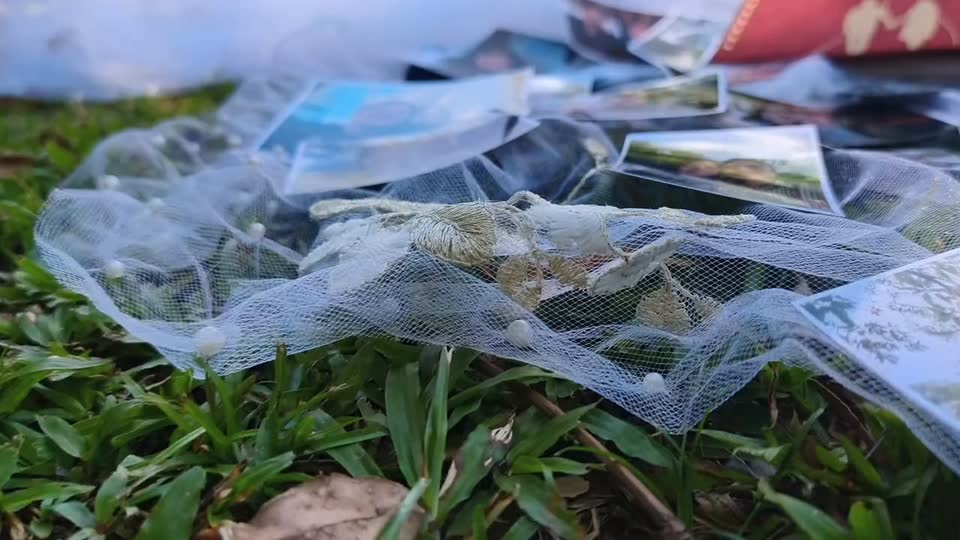

David & Adriana
19 de diciembre de 2026

¡Nos casamos!
Queremos que nos acompañes a celebrar nuestro gran día.
Sábado 19 de diciembre de 2026
Faltan 68 días
- Hora
- 16:00 h
- Lugar
- El Andaluz ParkPeribeca, estado Táchira
Código de vestimenta
Formal campestre
- Prendas frescas como lino o algodón
- Colores claros, pasteles o tonos tierra
- Ellas: vestidos ligeros y calzado cómodo, como tacón ancho, cuña o sandalias planas
- Ellos: traje claro o de lino, con corbata opcional
- El blanco se lo dejamos a la novia
Confirma tu asistencia
Cuéntanos tu nombre y cuántas personas vienen. Solo toma un minuto.